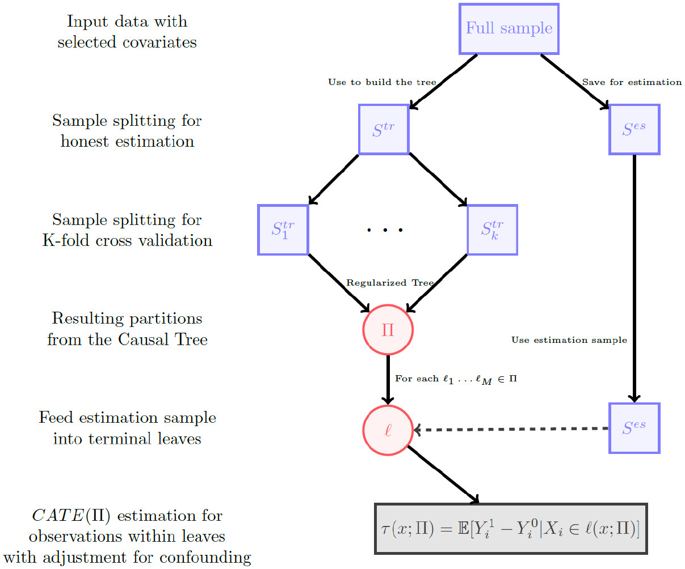
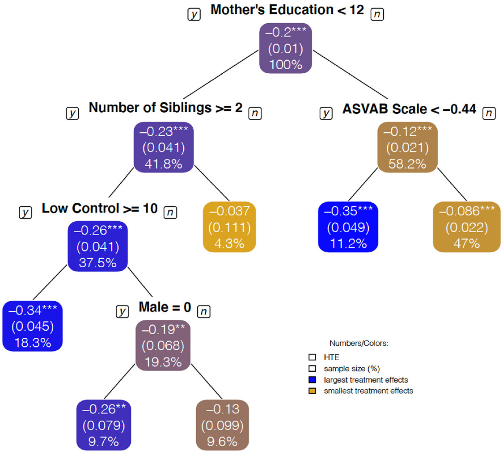

読書メモ：Brand et al.(2021)
要約
イントロダクション
因果効果の異質性を研究することは希少な社会的資源がどのように社会で分配されているのか、あるイベントがその生起しやすさの異なる集団にたいしてどのように影響するのか、いかなる要因が効果の異質性を説明するのかにたいして価値ある視座を提供する。もし政策立案者が因果効果の異質性のパターンを理解していれば、政策介入を最適的(optimal)に実行できるようになる。
因果効果の異質性を検証するため、先行研究では異質性を生じさせるサブ集団(ジェンダー・学歴など)を先見的に措定したり、傾向スコア(処置を受ける確率)で層化したりして効果の差異を検証してきた。
意味のあるサブ集団を同定するため、研究者は何十何百もの回帰分析を走らせることがあるが(p-hacking)、この手続きを踏んだ統計的推論は妥当ではない
かりに意味のあるサブ集団を同定できたとしても、複数の共変量を同時に、非線形に考える必要がある(e.g., 「白人男性」より「信仰心の強い、高収入層の白人男性」)
本論文ではより意味のあるサブ集団を透明性高く同定するためのデータドリブンな機械学習の手法について論じる。機械学習の手法はモデル選択過程を系統化し、正確な予測を達成することから近年社会科学で急速に発展している。決定木、なかでも因果木(causal tree)と呼ばれる手法が因果効果の異質性を簡単に、そして解釈可能に捉えるために適している。
本論文では(1) 逆確率重み付け(IPW)、(2) 最近傍マッチング、(3) ダブリーロバスト因果フォレストの3つの手法を、社会学的意義のある観察データにたいしてどのように効率的に適用するのかを示す。そして、たんに特定の共変量や傾向スコアで層化することに比べて因果木はより応答的で(responsive)、理論的に興味深いサブ集団を同定することを論じる。
因果効果の異質性をひらく
平均因果効果の定義
因果効果の定義は Equation 1 の通り。同じ個人に対して処置を与えた場合と与えなかった場合のアウトカムの差。
\[ \tau_i = Y^1_i - Y^0_i \tag{1}\]
ただし実際には同じ人に処置を与えている状況と与えていない状況を同時に観察できない。さまざまな追加的仮定が必要だが、観察データでは、交絡なし(\(X\)を条件付ければ、処置とアウトカムは独立)の仮定を置く。
\[ W_i \coprod (Y^1_i, Y^0_i) \mid X_i \tag{2}\]
Equation 2 を完全にノンパラメトリックに行うのは不可能1。その代わりに共変量が’近い’個体をマッチさせて因果効果を推定する。そのアプローチの1つが傾向スコア(共変量を条件づけたときに個体が処置を受ける確率)であり、\(e(x)\)として Equation 3 のように 表現される。
\[ e(x) = pr(W_i = 1 \mid X_i = x) \tag{3}\]
共変量および傾向スコアに基づいた分割
社会学者が伝統的におこなっている共変量分割は条件付き因果効果(conditional average treatment effect、CATE)として Equation 4 、Equation 5 のようにに表現される(それぞれ共変量と傾向スコアで表現したもの)。
\[ \tau(x) = E [ Y^1_i - Y^0_i \mid X_i = x ] \tag{4}\]
\[ \tau(e(x)) = E [ Y^1_i - Y^0_i \mid e(X_i) = e(x) ] \tag{5}\]
木ベースの機械学習
教師あり機械学習はあるデータで訓練させ、別のデータでそれを検証する。訓練データをあまりに厳密に予測しすぎると別のデータに一般化できなくなるため(過学習)、ほかのデータに移転できるくらい程よく柔軟なアルゴリズムが得られる。
決定木(decision tree)は共変量の閾値にそって、データの類似性が高い(分散が小さい)部分集合に繰り返し分割する。各決定で平均二乗誤差(mean squared error、MSE)を最小化する共変量とその閾値を選択する。このアプローチは都度MSEを最小化する結果、データ全体の異質性を大域的には捉えられないデメリットも持つ。訓練データのリサンプリング(bagging)と共変量のランダムな選定を複数回行い平均化するランダムフォレストを適用し、この問題に対処する。
因果木を使用した繰り返しの分割
社会学的意義の大きい手法として、 Athey and Imbens (2016) が開発した潜在アウトカムのアプローチにもとづく因果木のアルゴリズムに着目する。ある木(ある分割群\(\prod\))は分割された共変量空間 \(\mathbb{X}\) と一致する。\(\mathbb{X}\)を相互排他的な\(M\)個の葉\(l_1, \cdots, l_M\)に分割し、各\(l_1, \cdots, l_{M-1}\)2で訓練したアウトカムの平均を\(l_M\)の個体のアウトカムにたいして推定する。因果木では(観測されたアウトカム\(Y\)ではなく)因果効果\(\tau\)(=潜在アウトカム)を最も良く予測するような決定木を適用する。
Athey and Imbens (2016) はオネスト推定も提案している。データを訓練用\(S^{tr}\)と検証用\(S^{es}\)に分け、\(S^{tr}\)で木を構築し(すなわち、最も精度良い分類をし)、\(S^{es}\)で各葉\(l_1, \cdots, l_M\)固有の因果効果を求める。オネスト推定と潜在アウトカムのための期待(expected)MSEとして Equation 6 を定義している。
\[ -\hat{EMSE}_{\tau(x)} = \frac{1}{N^{tr}} \Sigma_{i \in S{tr}} \hat{\tau}^2 \left(X_i; S^{tr}, \prod \right) - \left( \frac{1}{N^{tr}} + \frac{1}{N^{es}} \right) \Sigma_{i \in \prod} \left( \frac{S^2_{S^{tr}(1)} (l)}{p(l)} + \frac{S^2_{S^{tr}(0)}(l)}{1 - p(l)} \right) \tag{6}\]
第一項は各葉の因果効果の分散を、第二項は因果効果の不確実性を示している。キモは\(N^{es}\)の処置効果による不確実性を考慮しているところにある。言い換えれば、効果の異質性を適切に捉えると同時に、捉えた異質性のなかでは推定精度が高くある状況をオネスト推定は目指している。結果として捉える条件付き平均因果効果(CATE)は Equation 7 のように表現される。
\[ \tau(x; \prod) = E \left[ Y^1_i - Y^0_i \mid X_i \in l(x; \prod) \right] \tag{7}\]

Source: Brand et al. (2021) Figure1より引用
細々した議論。因果木には交絡なしの仮定が伴う。また、共変量は処置の前にあるもののみを含める必要がある。コモンサポート（マッチングにおいて、マッチしない集団が分析から除外されてしまうこと）の問題もなお残る。
因果木は実証的探索、重要な共変量の発見、解釈可能性という点で強みを発揮する。因果木は分析の前では想定されなかった有意味な共変量を析出し、サンプルを分割してアウトカムを予測する慣習的な機械学習の代わりに、不偏平均因果効果の推定をも可能にする。因果木は単一の簡単な解釈可能性を提供こそしないが、異質性の普遍検定（omnibus test）や共変量の重要性を通じて解釈を助ける。
実証への適用
大卒が賃金(低賃金職の時間)に与える効果の異質性を以下4つの課題として検証する。データはNLSY1979-2014を用いる。
大学修了は賃金労働に従事する時間の割合を減少させるのか？
低賃金労働に対する大学の効果は、傾向スコア層や、大学修了の可能性に影響する主要な共変量（親の収入、母親の学歴、測定された能力、人種）によって異なるのか？
低賃金労働に対する大学修了の効果は、我々が考慮しなかったサブグループによって異なるか？
処置効果の推定値は、分割間の未観測交絡に対してどの程度敏感か？
| 低賃金労働に従事する時間の割合 | 調整なし | IPW | 最近傍マッチング | 因果木 |
|---|---|---|---|---|
| 大学修了 | -.223**(0.13) | -.189**(0.16) | -.174**(0.23) | -.176**(0.24) |
Figure 2 は傾向スコアおよび共変量別のCATEを、Figure 3 は因果木を用いた共変量分割パターンを示している。因果木は理論的予想にはない集団を同定できている：母学歴(母高卒)については考えていたが、大家族で育ち、社会的コントロールが低い高卒の母親や、高卒より学歴の高い、認知能力の高い母親については考えていなかった。

Source: Brand et al. (2021) Figure2より引用

Source: Brand et al. (2021) Figure4より引用
因果木の安定性を鑑みて、4000本の因果フォレストをおこない、各特徴量の相対的な重要度を Figure 4 に示した。上6つの変数が Figure 3 で選択共変量と大きく重なっており、 Figure 3 の因果木が重要な共変量を選択していることがわかる。

Source: Brand et al. (2021) Figure6より引用
議論
全員が処置の効果を均等に受けるとはかぎらない。異質性は長らく検討されてきた議題だが、社会学者は伝統的に先見的にサブ集団への分割をしてきた（もちろん、それ自体が理論的関心となるからだが）。ただし、つねに異質性を完全に把握できるとは限らない。社会学者は何百もの回帰を走らせてデータドリブンな異質性を把握してきたが、それはp-hackingの見地からは疑わしい。
本論文で用いたcausal treeはオネスト推定を用いることで、葉内の予測力を最大化する仕方で感応的なサブ集団を同定する。本論文では社会学の主要な研究課題である大学の賃金への効果に応用した。当然、実証タスクの自動化は共変量のインバランス、交絡、結果の解釈の責任から逃れられるわけではない。我々は、効果の異質性に関心のある社会学者に対して、因果木を応用して、より明確な探索を用い、効果の異質性を探求するための研究実践を改善するよう促している。
References
Footnotes
たとえば、OLS回帰(\(y = \alpha + \beta_1 x_1 + \beta_2 x_2 + \epsilon\)、ただし\(x_1\)は比尺度とする)は、\(x_1\)と\(x_2\)が交互作用をとらない(すなわち、\(\beta_1 x_1 \times \beta_2 x_2\)ではない)こと、\(x_1\)は線形である(特定の閾値で効果が変わらない)ことを仮定している。↩︎
原文には\(l_M\)の個体のアウトカムにたいして推定するとしか書かれておらず、訓練データに\(l_M\)を含めるかどうかは書かれていない。ただし、通常は含めないと思われるため、\(l_1, \cdots, l_{M-1}\)と表記している。↩︎